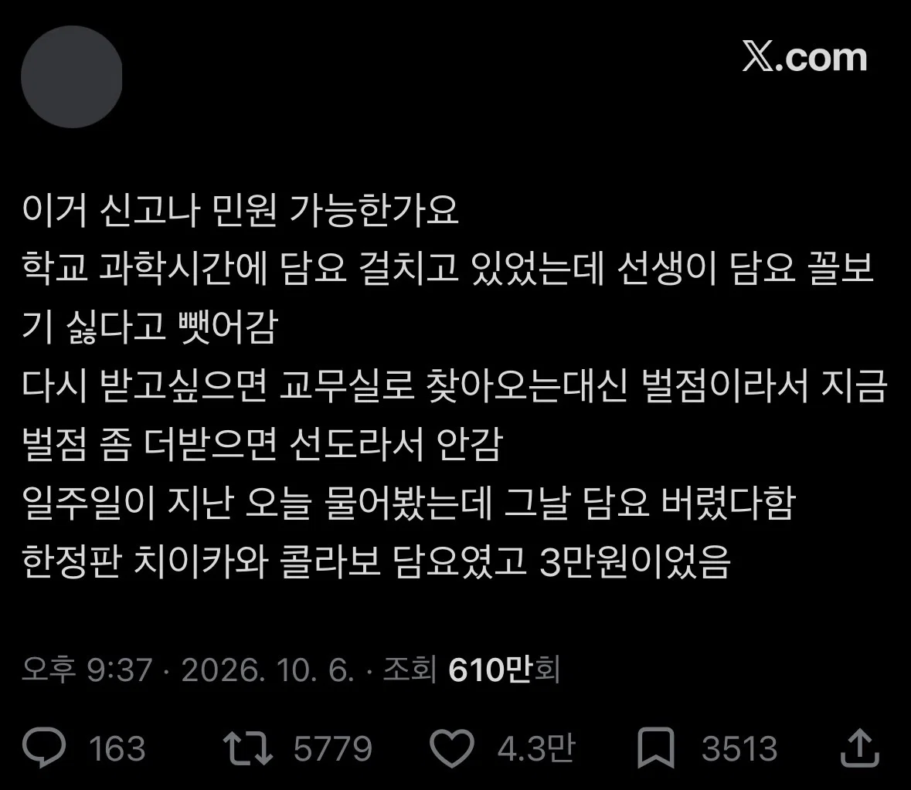
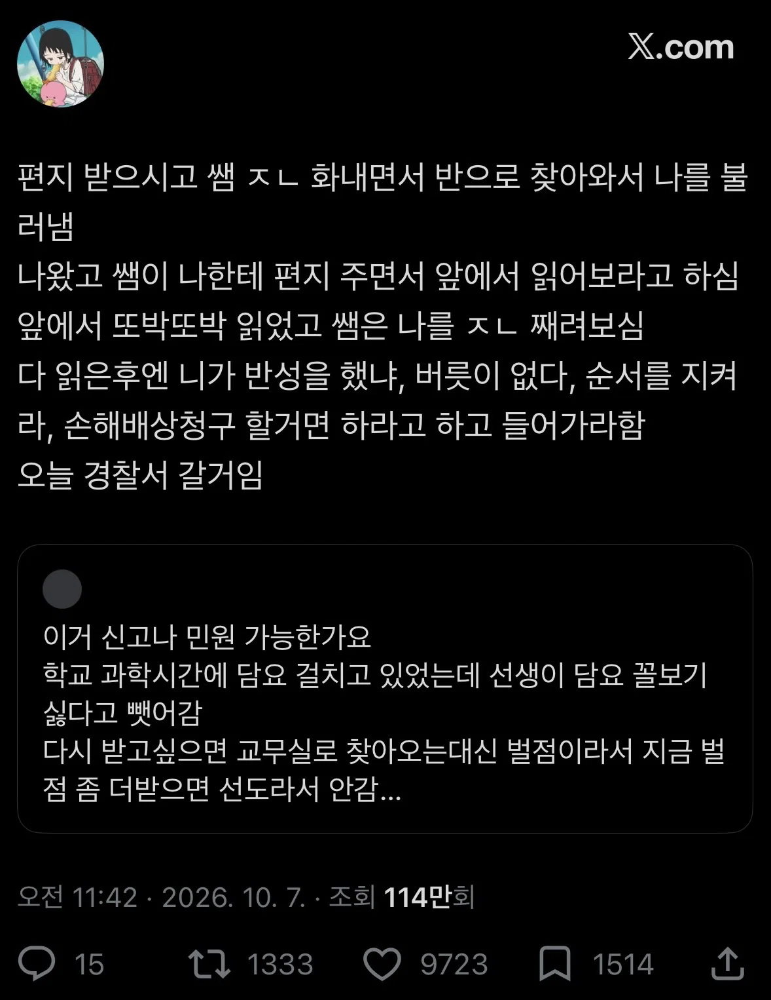
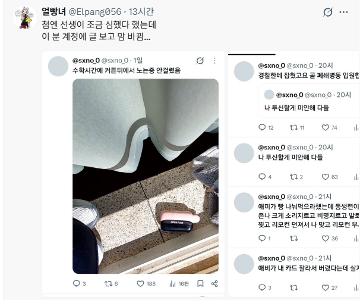
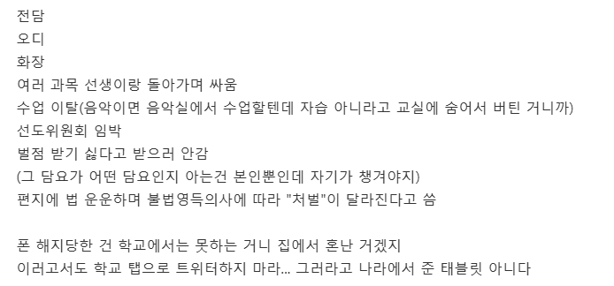
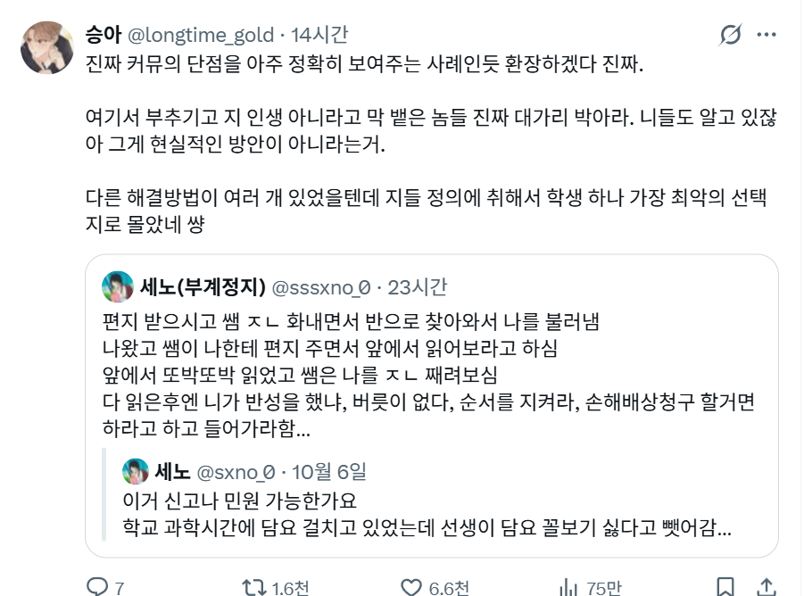

현재 조회수는 1000만 찍었음


오디가 overdose =약물오남용

어제 봤던 내용에서는
선생이 한남아님? 그랬는데 여자라고 함
트위터 반응은 선생이 잘못했다는 반응이고
현재 글 삭제 한듯
더쿠에서 퍼왔는데 더쿠에서는
주작이다, 담요를 왜 뺏음? 담요 한정판이라서 가져갔을거임
선생이 불쌍하다 양쪽말 들어봐야된다 등등
750개 댓글 달림
담요 가져가셔 왜 버렸냐는 댓글이 많았음
https://theqoo.net/square/4368157083
버린거는 선생 잘못임